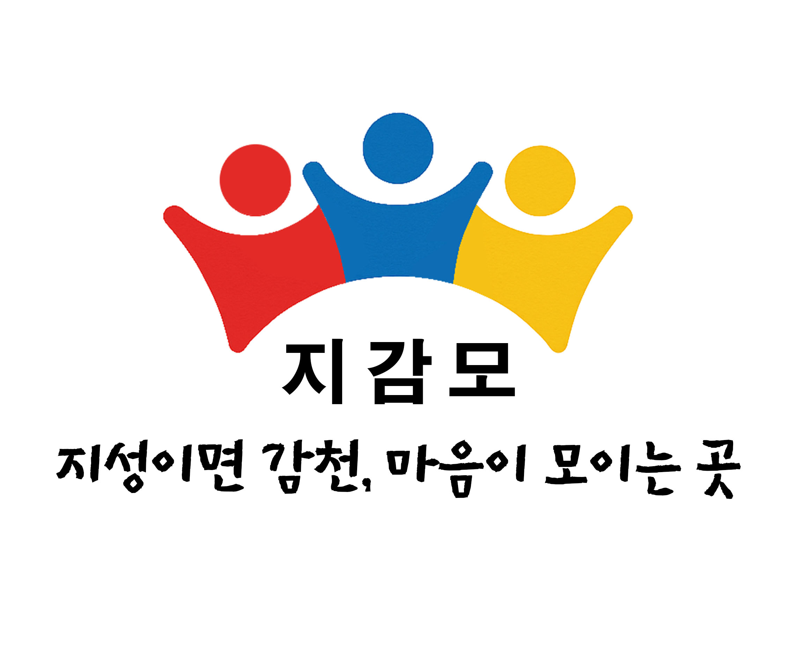

지성이면 감천, 마음이 모이는 곳
따뜻한 마음을 나누는 부산 감천2동 봉사단체 '지감모'에 오신 것을 환영합니다.
우리 마을의 작은 정성이 모여 큰 기적을 만듭니다.
🧡 감천2동 주민 여러분을 환영합니다!
지감모는 감천2동 주민분들을 멤버로 모시고 있습니다.
함께 따뜻한 동네를 만들어갈 이웃들의 참여를 기다립니다.

따뜻한 마음을 나누는 부산 감천2동 봉사단체 '지감모'에 오신 것을 환영합니다.
우리 마을의 작은 정성이 모여 큰 기적을 만듭니다.
지감모는 감천2동 주민분들을 멤버로 모시고 있습니다.
함께 따뜻한 동네를 만들어갈 이웃들의 참여를 기다립니다.